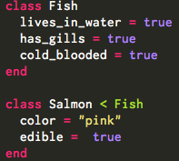
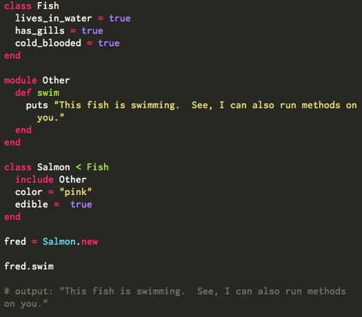

Inheritance vs Composition in Ruby
Friday, September 12, 2014
In my blog last week I introduced the concept of Classes in Ruby. Classes are objects that we can create instances of and run methods on. This week I'm going to introduce the concept of inheritance and composition and how they relate to classes.
Inheritance is a relationship between two classes in Ruby. When we say a class inherits from another class we are saying the class acquires the methods and behaviors defined in its parent class.
In the example below Salmon inherits from Fish since salmon is a type of fish. The "is a" relationship is a good way to think about how inheritance works.

Notice the symbol '<' designates Salmon as a subclass of Fish. Salmon will now share the characteristics of the Fish class such as: lives_in_water, has_gills, and cold_blooded.
Composition is another way we can allow classes to share attributes and methods without using inheritance. Ruby uses the concepts of 'modules' to achieve this.

Notice in the example below the use of the 'Other' module. In the Salmon class we throw in "include Other" to give the Salmon class access to that module. We are then able to successfully call the swim method on an instance of Salmon.
How do you choose between using inheritance and using composition? The main goal is to avoid duplicating code. Choose whichever strategy is least complex and avoids duplication. As long as either strategy achieves this, it is rather subjective when to use inheritance or composition.